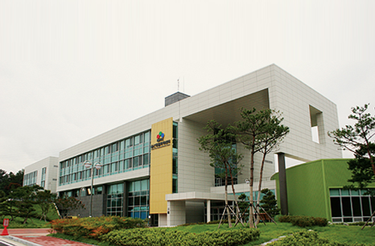
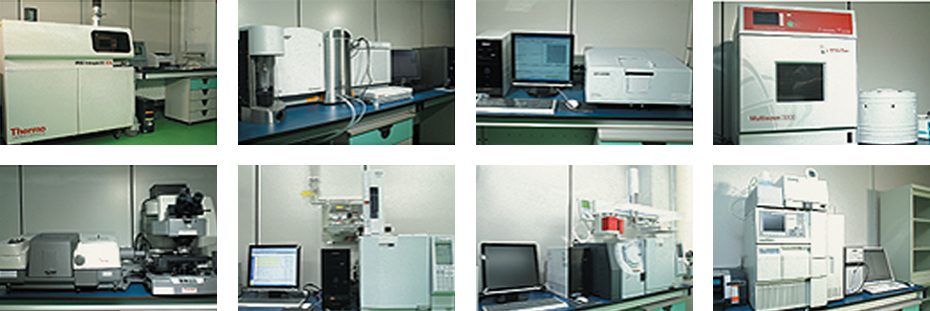
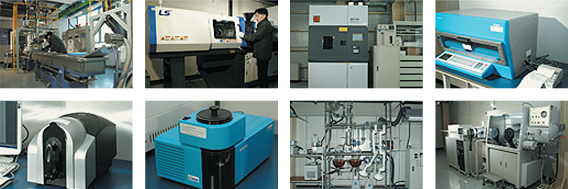
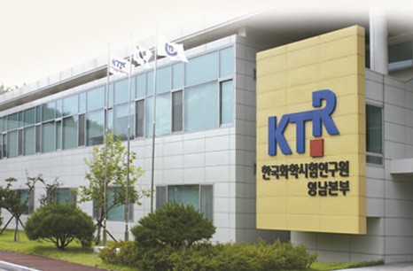
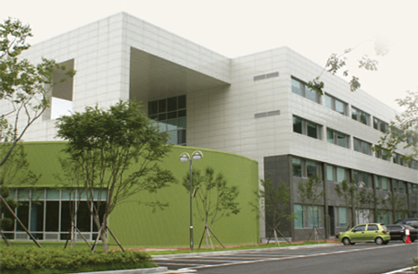

첨단 연구지원 시설
- Home
- 투자 강점
- 투자환경
- 첨단 연구지원 시설
첨단 연구지원 시설
울산은 공공연구기관들과 250여개의 기업부설연구소 등이 지역의 연구개발 및 혁신능력 향상을 위해 노력하고 있습니다.
자동차부품 혁신센터

자동차부품혁신센터는 산업통상자원부·울산광역시가 공동으로 출연하여 설립한 자동차부품산업 종합지원기관으로, 울산의 핵심전략 사업인 오토밸리 프로젝트의 중심축 역활을 하고 있습니다.
또한 동남권 자동차부품업체를 유기적으로 결집하여 첨단 기술력 개발을 통한 자동차 산업의 경쟁력을 유지하기 위한 사업을 수행하고 있습니다.
사업분야
장비공동이용사업 / 공동기술개발사업 / 기업지원사업 / 교육훈련사업 / 네트워킹 사업 / 창업보육사업
주요 보유장비 현황
| 시험평가 | 안전시험 | 연구기획 | 부품개발 |
|---|---|---|---|
| 6축 로드시뮬레이터(Half Car) | 충돌시험차량 견인장비 | Hyperworks | 3차원 측정기 |
| 선형유압내구시험기 | Dummy | Deform | 급속조형기(FDM) |
| MAST(다축진동내구시험기) | 디지털 고속 카메라 | Abaqus | 5축고속가공기 |
| 2축 피로시험기 | Europo Side Impact Test Cart | Nastran | 방전가공기 |
| 소음분석시스템 | USA Side lmpact Test Cart | 레이저 용접기 | |
| 진동분석시스템 | 정적전복장치 | Patran | 레이저 열처리 장비 |
| 다관절내구 시험기 | 후방 연료누설 충돌 대차 | Magma | 대형이온질화처리 장비 |
| CT-X선 시험기(비파괴) | 다관절 3차원 측정기 | Pam-Stamp | |
| 성분분석기(EPMA) | 보행자보호시험장비 | ||
| 비디오마이크로스코프 | 충돌시험고정벽 |
울산정밀 화학센터

정밀화학센터는 울산지역 화학기업들의 연구개발, 제품인증 및 평가 등을 지원하기 위해 울산광역시와 산업통상자원부가 공동으로 출연하여 설립한 연구지원시설입니다.
이 센터는 첨단의 연구시설과 장비, 시장친화적 기술개발역량, 산·학·연 네트워크를 갖추고 있어 울산지역 석유 화학산업을 높은 부가가치와 기술집약적인 정밀화학산업으로 고도화하는 중심적인 역할을 수행하고 있습니다.
사업분야
RIS사업 / 네트워킹사업 / 창업보육사업 / 연구개발사업 / 교육훈련사업 / 시험생산사업 / 장비이용사업
보유장비 (물질분석)
유도결합 플라즈마 분광기 / 주사전자 현미경 / 유도결합 플라즈마 질량분석기 / 마이크로 웨이브 시료전처리 시스템 / 적외선 분광 분석기 / 가스 크로마토 그래피 / 가스 크로마토 그래피 질량분석기 / 고성능 액체 크로마토 그래피 / 총유기 탄소 분석기 / 자외선-가시광선 분광 광도계 / X-선 회절 분석기 / 시차열중량분석계 / 입도분석기 / 이온 크로마토 그래피

보유장비 (시험생산)
압출기 / 사출성형기 / 내후성 실험기 / 도장경화오븐 / 컴퓨터 컬러 매칭기 / 분광광도계 / 박막증류장치 / 승화정제장비

한국화학 융합 시험연구원 영남본부

한국화학융합시험연구원은 우수한 인력과 국제기준에 부합하는 전문성을 가진 한국의 대표적인 공인 시험·검사·인증기관입니다.
또한 이 센터는 기존의 시험분석 영역 뿐만 아니라 신기술영역을 끊임없이 연구하여 선진국 수준의 고품질 시험분석, 평가, 품질보증, 인증 서비스를 제공하고 있습니다.
사업분야
- 표준화연구개발
- 지원사업 : 산·학·연 공동기술개발 컨소시엄 사업 / 특허기술성 평가 / 대체세정 기술지원사업
- 제품인증 : Q(품질보증)마크 / S(국가공인제품인증)마크 / GQ(중소기업우수제품)마크
- 인증 : KS인증 / JIS인증 / SG마크업무 수탁기관(일본) / RW TUV와 업무협약 체결(독일)
한국화학 연구원 울산신화학 실용화센터

한국화학연구원은 신약, 신소재, 지속성장 화학기술 등 선진화학 기술연구를 통해 우리 세대 뿐만 아니라 다음세대의 삶의 질과 환경에 기여하는 연구를 수행합니다.
사업분야
- 그린에너지소재 분야 : 수소에너지·태양에너지 등 신재생에너지
- 석유화학 공정고도화 분야 : P2P 고도통합 네트워크, 신촉매·신공정, 폐기물 자원화
- 융·복합 신소재 분야 : 자동차·조선산업 등 시너지 창출 고기능 첨단소재 개발
- 정밀화학 분야 : 고부가가치화 및 첨단화 연구, 기술이전에 따른 실용화 연구